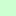

<!doctype html>
<html lang="en">
    <head>
        <meta charset="utf-8">
        <meta http-equiv="X-UA-Compatible" content="IE=edge">
        <meta name="viewport" content="initial-scale=1,user-scalable=no,maximum-scale=1,width=device-width">
        <meta name="mobile-web-app-capable" content="yes">
        <meta name="apple-mobile-web-app-capable" content="yes">
        <link rel="stylesheet" href="css/leaflet.css">
        <link rel="stylesheet" href="css/L.Control.Layers.Tree.css">
        <link rel="stylesheet" href="css/qgis2web.css">
        <link rel="stylesheet" href="css/fontawesome-all.min.css">
        <link rel="stylesheet" href="css/leaflet-control-geocoder.Geocoder.css">
        <link rel="stylesheet" href="css/leaflet-measure.css">
        <style>
        html, body, #map {
            width: 100%;
            height: 100%;
            padding: 0;
            margin: 0;
        }
        </style>
        <title></title>
    </head>
    <body>
        <div id="map">
        </div>
        <script src="js/qgis2web_expressions.js"></script>
        <script src="js/leaflet.js"></script>
        <script src="js/L.Control.Layers.Tree.min.js"></script>
        <script src="js/leaflet.rotatedMarker.js"></script>
        <script src="js/leaflet.pattern.js"></script>
        <script src="js/leaflet-hash.js"></script>
        <script src="js/Autolinker.min.js"></script>
        <script src="js/rbush.min.js"></script>
        <script src="js/labelgun.min.js"></script>
        <script src="js/labels.js"></script>
        <script src="js/leaflet-control-geocoder.Geocoder.js"></script>
        <script src="js/leaflet-measure.js"></script>
        <script src="data/ZONE_VEGETATION_1.js"></script>
        <script src="data/DISTRICT_2.js"></script>
        <script>
        var map = L.map('map', {
            zoomControl:false, maxZoom:28, minZoom:1
        }).fitBounds([[8.48143689,-7.718190620533333],[10.79528871,-3.0185004794666663]]);
        var hash = new L.Hash(map);
        map.attributionControl.setPrefix('<a href="https://github.com/tomchadwin/qgis2web" target="_blank">qgis2web</a> &middot; <a href="https://leafletjs.com" title="A JS library for interactive maps">Leaflet</a> &middot; <a href="https://qgis.org">QGIS</a>');
        var autolinker = new Autolinker({truncate: {length: 30, location: 'smart'}});
        // remove popup's row if "visible-with-data"
        function removeEmptyRowsFromPopupContent(content, feature) {
         var tempDiv = document.createElement('div');
         tempDiv.innerHTML = content;
         var rows = tempDiv.querySelectorAll('tr');
         for (var i = 0; i < rows.length; i++) {
             var td = rows[i].querySelector('td.visible-with-data');
             var key = td ? td.id : '';
             if (td && td.classList.contains('visible-with-data') && feature.properties[key] == null) {
                 rows[i].parentNode.removeChild(rows[i]);
             }
         }
         return tempDiv.innerHTML;
        }
        // add class to format popup if it contains media
		function addClassToPopupIfMedia(content, popup) {
			var tempDiv = document.createElement('div');
			tempDiv.innerHTML = content;
			if (tempDiv.querySelector('td img')) {
				popup._contentNode.classList.add('media');
					// Delay to force the redraw
					setTimeout(function() {
						popup.update();
					}, 10);
			} else {
				popup._contentNode.classList.remove('media');
			}
		}
        var zoomControl = L.control.zoom({
            position: 'topleft'
        }).addTo(map);
        var measureControl = new L.Control.Measure({
            position: 'topleft',
            primaryLengthUnit: 'meters',
            secondaryLengthUnit: 'kilometers',
            primaryAreaUnit: 'sqmeters',
            secondaryAreaUnit: 'hectares'
        });
        measureControl.addTo(map);
        document.getElementsByClassName('leaflet-control-measure-toggle')[0].innerHTML = '';
        document.getElementsByClassName('leaflet-control-measure-toggle')[0].className += ' fas fa-ruler';
        var bounds_group = new L.featureGroup([]);
        function setBounds() {
        }
        map.createPane('pane_OSMStandard_0');
        map.getPane('pane_OSMStandard_0').style.zIndex = 400;
        var layer_OSMStandard_0 = L.tileLayer('http://tile.openstreetmap.org/{z}/{x}/{y}.png', {
            pane: 'pane_OSMStandard_0',
            opacity: 1.0,
            attribution: '<a href="https://www.openstreetmap.org/copyright">© OpenStreetMap contributors, CC-BY-SA</a>',
            minZoom: 1,
            maxZoom: 28,
            minNativeZoom: 0,
            maxNativeZoom: 19
        });
        layer_OSMStandard_0;
        map.addLayer(layer_OSMStandard_0);
        function pop_ZONE_VEGETATION_1(feature, layer) {
            var popupContent = '<table>\
                    <tr>\
                        <td colspan="2">' + (feature.properties['ID'] !== null ? autolinker.link(feature.properties['ID'].toLocaleString()) : '') + '</td>\
                    </tr>\
                    <tr>\
                        <th scope="row">NATURE</th>\
                        <td>' + (feature.properties['NATURE'] !== null ? autolinker.link(feature.properties['NATURE'].toLocaleString()) : '') + '</td>\
                    </tr>\
                    <tr>\
                        <th scope="row">NOM</th>\
                        <td>' + (feature.properties['NOM'] !== null ? autolinker.link(feature.properties['NOM'].toLocaleString()) : '') + '</td>\
                    </tr>\
                    <tr>\
                        <td colspan="2">' + (feature.properties['SOURCE'] !== null ? autolinker.link(feature.properties['SOURCE'].toLocaleString()) : '') + '</td>\
                    </tr>\
                    <tr>\
                        <td colspan="2">' + (feature.properties['DATE_MAJ'] !== null ? autolinker.link(feature.properties['DATE_MAJ'].toLocaleString()) : '') + '</td>\
                    </tr>\
                </table>';
            var content = removeEmptyRowsFromPopupContent(popupContent, feature);
			layer.on('popupopen', function(e) {
				addClassToPopupIfMedia(content, e.popup);
			});
			layer.bindPopup(content, { maxHeight: 400 });
        }
        function style_ZONE_VEGETATION_1_0(feature) {
            var context = {
                feature: feature,
                variables: {}
            };
            // Start of if blocks and style check logic
            if (exp_ZONE_VEGETATION_1rule0_eval_expression(context)) {
                  return {
                pane: 'pane_ZONE_VEGETATION_1',
                stroke: false, 
                fill: true,
                fillOpacity: 1,
                fillColor: 'rgba(16,90,0,0.65)',
                interactive: true,
            };
                }
                else if (exp_ZONE_VEGETATION_1rule1_eval_expression(context)) {
                  return {
                pane: 'pane_ZONE_VEGETATION_1',
                stroke: false, 
                fill: true,
                fillOpacity: 1,
                fillColor: 'rgba(44,213,38,0.65)',
                interactive: true,
            };
                }
                else if (exp_ZONE_VEGETATION_1rule2_eval_expression(context)) {
                  return {
                pane: 'pane_ZONE_VEGETATION_1',
                stroke: false, 
                fill: true,
                fillOpacity: 1,
                fillColor: 'rgba(58,159,38,0.65)',
                interactive: true,
            };
                }
                else if (exp_ZONE_VEGETATION_1rule3_eval_expression(context)) {
                  return {
                pane: 'pane_ZONE_VEGETATION_1',
                stroke: false, 
                fill: true,
                fillOpacity: 1,
                fillColor: 'rgba(143,168,72,0.65)',
                interactive: true,
            };
                }
                else if (exp_ZONE_VEGETATION_1rule4_eval_expression(context)) {
                  return {
                pane: 'pane_ZONE_VEGETATION_1',
                stroke: false, 
                fill: true,
                fillOpacity: 1,
                fillColor: 'rgba(42,160,125,0.65)',
                interactive: true,
            };
                }
                else if (exp_ZONE_VEGETATION_1rule5_eval_expression(context)) {
                  return {
                pane: 'pane_ZONE_VEGETATION_1',
                stroke: false, 
                fill: true,
                fillOpacity: 1,
                fillColor: 'rgba(168,163,66,0.65)',
                interactive: true,
            };
                }
                else if (exp_ZONE_VEGETATION_1rule6_eval_expression(context)) {
                  return {
                pane: 'pane_ZONE_VEGETATION_1',
                stroke: false, 
                fill: true,
                fillOpacity: 1,
                fillColor: 'rgba(203,107,22,0.65)',
                interactive: true,
            };
                }
                else if (exp_ZONE_VEGETATION_1rule7_eval_expression(context)) {
                  return {
                pane: 'pane_ZONE_VEGETATION_1',
                stroke: false, 
                fill: true,
                fillOpacity: 1,
                fillColor: 'rgba(253,191,111,0.65)',
                interactive: true,
            };
                }
                else if (exp_ZONE_VEGETATION_1rule8_eval_expression(context)) {
                  return {
                pane: 'pane_ZONE_VEGETATION_1',
                stroke: false, 
                fill: true,
                fillOpacity: 1,
                fillColor: 'rgba(205,255,209,0.65)',
                interactive: true,
            };
                }
            else {
                return {fill: false, stroke: false};
            }
        }
        map.createPane('pane_ZONE_VEGETATION_1');
        map.getPane('pane_ZONE_VEGETATION_1').style.zIndex = 401;
        map.getPane('pane_ZONE_VEGETATION_1').style['mix-blend-mode'] = 'normal';
        var layer_ZONE_VEGETATION_1 = new L.geoJson(json_ZONE_VEGETATION_1, {
            attribution: '',
            interactive: true,
            dataVar: 'json_ZONE_VEGETATION_1',
            layerName: 'layer_ZONE_VEGETATION_1',
            pane: 'pane_ZONE_VEGETATION_1',
            onEachFeature: pop_ZONE_VEGETATION_1,
            style: style_ZONE_VEGETATION_1_0,
        });
        bounds_group.addLayer(layer_ZONE_VEGETATION_1);
        map.addLayer(layer_ZONE_VEGETATION_1);
        function pop_DISTRICT_2(feature, layer) {
            var popupContent = '<table>\
                    <tr>\
                        <td colspan="2">' + (feature.properties['ID'] !== null ? autolinker.link(feature.properties['ID'].toLocaleString()) : '') + '</td>\
                    </tr>\
                    <tr>\
                        <th scope="row">NOM</th>\
                        <td>' + (feature.properties['NOM'] !== null ? autolinker.link(feature.properties['NOM'].toLocaleString()) : '') + '</td>\
                    </tr>\
                    <tr>\
                        <td colspan="2">' + (feature.properties['SOURCE'] !== null ? autolinker.link(feature.properties['SOURCE'].toLocaleString()) : '') + '</td>\
                    </tr>\
                    <tr>\
                        <td colspan="2">' + (feature.properties['DATE_MAJ'] !== null ? autolinker.link(feature.properties['DATE_MAJ'].toLocaleString()) : '') + '</td>\
                    </tr>\
                </table>';
            var content = removeEmptyRowsFromPopupContent(popupContent, feature);
			layer.on('popupopen', function(e) {
				addClassToPopupIfMedia(content, e.popup);
			});
			layer.bindPopup(content, { maxHeight: 400 });
        }

        function style_DISTRICT_2_0() {
            return {
                pane: 'pane_DISTRICT_2',
                opacity: 1,
                color: 'rgba(0,0,0,1.0)',
                dashArray: '',
                lineCap: 'butt',
                lineJoin: 'miter',
                weight: 2.0, 
                fillOpacity: 0,
                interactive: true,
            }
        }
        map.createPane('pane_DISTRICT_2');
        map.getPane('pane_DISTRICT_2').style.zIndex = 402;
        map.getPane('pane_DISTRICT_2').style['mix-blend-mode'] = 'normal';
        var layer_DISTRICT_2 = new L.geoJson(json_DISTRICT_2, {
            attribution: '',
            interactive: true,
            dataVar: 'json_DISTRICT_2',
            layerName: 'layer_DISTRICT_2',
            pane: 'pane_DISTRICT_2',
            onEachFeature: pop_DISTRICT_2,
            style: style_DISTRICT_2_0,
        });
        bounds_group.addLayer(layer_DISTRICT_2);
        map.addLayer(layer_DISTRICT_2);
        var osmGeocoder = new L.Control.Geocoder({
            collapsed: true,
            position: 'topleft',
            text: 'Search',
            title: 'Testing'
        }).addTo(map);
        document.getElementsByClassName('leaflet-control-geocoder-icon')[0]
        .className += ' fa fa-search';
        document.getElementsByClassName('leaflet-control-geocoder-icon')[0]
        .title += 'Search for a place';
        var overlaysTree = [
        {label: '<b>ADMINISTRATIF</b>', selectAllCheckbox: true, children: [
            {label: ' DISTRICT', layer: layer_DISTRICT_2},]},
        {label: '<b>VEGETATION</b>', selectAllCheckbox: true, children: [
            {label: 'ZONE_VEGETATION<br /><table><tr><td style="text-align: center;"></td><td>Forêt de conifères</td></tr><tr><td style="text-align: center;"></td><td>Forêt de feuillus</td></tr><tr><td style="text-align: center;"></td><td>Forêt mixte</td></tr><tr><td style="text-align: center;"></td><td>Forêt ouverte</td></tr><tr><td style="text-align: center;"></td><td>Forêt indifférenciée</td></tr><tr><td style="text-align: center;"></td><td>Lande</td></tr><tr><td style="text-align: center;"></td><td>Verger</td></tr><tr><td style="text-align: center;"></td><td>Vigne</td></tr><tr><td style="text-align: center;"></td><td>NC</td></tr></table>', layer: layer_ZONE_VEGETATION_1},]},
            {label: "OSM Standard", layer: layer_OSMStandard_0},]
        var lay = L.control.layers.tree(null, overlaysTree,{
            //namedToggle: true,
            //selectorBack: false,
            //closedSymbol: '&#8862; &#x1f5c0;',
            //openedSymbol: '&#8863; &#x1f5c1;',
            //collapseAll: 'Collapse all',
            //expandAll: 'Expand all',
            collapsed: true,
        });
        lay.addTo(map);
        setBounds();
        </script>
    </body>
</html>
